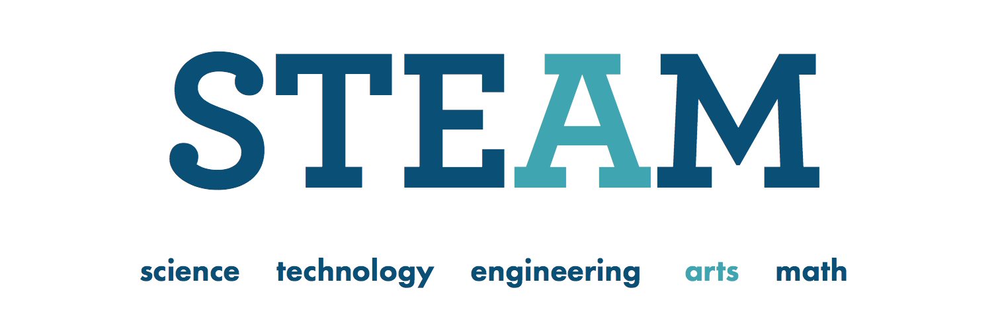

"How can design improve American education?" My BFA thesis started with that question and ended with a working product prototype. Here's how I got there.
Designers can't directly change the complex problems inherent in education, but they are able to provide better tools for the teachers who can. Rather than provide a radical solution for a context to which I was a relative newcomer, I decided to focus on the gap between the ideal and existing toolset of innovative teachers. Math had always been my strong suit in school, so I began my research by interviewing math teachers to find out where that gap was.
I found an exciting trend within the STEAM movement, which aimed to facilitate lateral discovery of STEM topics through creative exploration and artistic activities.
However, a STEAM-oriented lesson often demands more resources and planning time than a math or science teacher can afford. By providing a packaged creative activity with clear Common Core objectives and few material requirements, I could help bring teachers one step closer to a STEAM-integrated curriculum.
A multitude of concepts in math related perfectly to music, but unfamiliar notation could intimidate students without musical background.